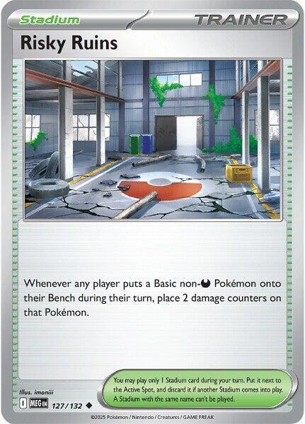

x4
x4 x2
x2 x2
x2 x2
x2 x3
x3 x2
x2 x2
x2 x2
x2 x2
x2 x4
x4 x2
x2![Boss's Orders [Ghetsis]](./assets/654453_bosss-orders-ghetsis.jpg) x3
x3 x4
x4 x3
x3 x3
x3 x3
x3 x2
x2


x2 x11
x11 Xero's Curse Toll
Xero's Curse Toll 

Two ex Gengars on one Haunter line, rebuilt from the August 2026 meta
← back to all decksThree findings drove this build, and each one is checkable.
The standalone Mega Gengar box loses. Its record on Limitless online play is 2 wins against 17 losses. The card wins events only as a package inside N's Zoroark ex or Marnie's Grimmsnarl ex shells. Building "Mega Gengar plus one-prize Darkness attackers" and expecting tournament results is betting against the data.
Standard holds a second ex Gengar, and nobody plays it. Gengar ex from Temporal Forces carries Gnawing Curse, which puts 2 damage counters on any Pokémon your opponent attaches an Energy to from hand. It appears in zero decklists in the Limitless main database. It is a different card name from Mega Gengar ex, so the two share one Haunter line and separate 4-copy limits.
A quarter of the field turns Shadowy Concealment off. Festival Lead, Slowking, Alakazam, Dhelmise, and Toucannon together hold roughly 25% of the current meta, and they attack with single-prize Pokémon precisely to blank abilities like Concealment. Gnawing Curse fires against every deck that attaches Energy from hand, which is all of them.
So the deck runs the prize ladder and a second ghost. Against ex-attacking decks you build the Mega and discount every trade. Against single-prize decks you build the Curse and tax every attachment. One Gastly feeds either payoff.
x4x2x2x2x3x2x2x2x2x4x2x3x4x3x3x3x2
x2x11Pokémon (21)
| Qty | Card | Set | Number | Reg |
|---|---|---|---|---|
| 4 | Gastly | Phantasmal Flames | 054 | I |
| 2 | Haunter | Perfect Order | 049 | J |
| 2 | Gengar ex | Temporal Forces | 104 | H |
| 2 | Mega Gengar ex | Phantasmal Flames | 056 | I |
| 3 | Munkidori | Twilight Masquerade | 095 | H |
| 2 | Fezandipiti ex | Shrouded Fable | 038 | H |
| 2 | Sableye | Phantasmal Flames | 059 | I |
| 2 | Toxel | Phantasmal Flames | 067 | I |
| 2 | Toxtricity | Phantasmal Flames | 068 | I |
Trainers — Supporters (9)
| Qty | Card | Set | Number | Reg |
|---|---|---|---|---|
| 4 | Lillie's Determination | Mega Evolution | 119 | I |
| 2 | Dawn | Phantasmal Flames | 087 | I |
| 3 | Boss's Orders [Ghetsis] | Mega Evolution | 114 | I |
Trainers — Items (17)
| Qty | Card | Set | Number | Reg |
|---|---|---|---|---|
| 4 | Buddy-Buddy Poffin | Temporal Forces | 144 | H |
| 3 | Rare Candy | Mega Evolution | 125 | I |
| 3 | Ultra Ball | Mega Evolution | 131 | I |
| 3 | Night Stretcher | Shrouded Fable | 061 | H |
| 2 | Energy Switch | Mega Evolution | 115 | I |
| 1 | Switch | Mega Evolution | 130 | I |
| 1 | Prime Catcher | Prismatic Evolutions | 119 | H |
Trainers — Stadium (2)
| Qty | Card | Set | Number | Reg |
|---|---|---|---|---|
| 2 | Risky Ruins | Mega Evolution | 127 | I |
Energy (11)
| Qty | Card | Set | Number | Reg |
|---|---|---|---|---|
| 11 | Basic Darkness Energy | Mega Evolution Energies | 007 | - |
21 + 9 + 17 + 2 + 11 = 60. ✓
Basics: 13 (4 Gastly, 3 Munkidori, 2 Fezandipiti ex, 2 Sableye, 2 Toxel). That is roughly a 16% mulligan rate, inside the 75-85% target band for opening on a playable Basic.


 Darkness
Darkness Fighting ×2
Fighting ×2 1
1 legal (Reg I)Petty Grudge (10)
legal (Reg I)Petty Grudge (10)The Basic everything is built on, and deliberately the Phantasmal Flames print, because Gengar Gang runs the Perfect Order print and both decks stay sleeved. Same 70 HP, so it stays a legal Buddy-Buddy Poffin target.

 DarknessFighting ×21legal (Reg J)Haunt - Place 3 damage counters on your opponent's Active Pokémon.
DarknessFighting ×21legal (Reg J)Haunt - Place 3 damage counters on your opponent's Active Pokémon.Haunt places 3 damage counters for one Energy, and placed counters ignore Weakness and Resistance. Haunter is not a stage this deck skips lightly; before Rare Candy arrives, a 100 HP body dropping 3 counters a turn is the chip engine already running. Every counter it places is one more the kill math does not have to find later.


 DarknessFighting ×22legal (Reg H)Tricky Steps (160) - You may move an Energy from your opponent's Active Pokémon to 1 of their Benched Pokémon.
DarknessFighting ×22legal (Reg H)Tricky Steps (160) - You may move an Energy from your opponent's Active Pokémon to 1 of their Benched Pokémon.The sleeper card. Stage 2 from Haunter, 310 HP, gives up 2 Prizes. No tournament list plays it, which is exactly why it is interesting; it answers the matchup the Mega cannot touch.
Gnawing Curse taxes the fundamental action of the game. Whenever your opponent attaches an Energy card from their hand to 1 of their Pokémon, 2 damage counters go on that Pokémon. Read the text twice for what is not there. There is no Active Spot requirement, so the Curse runs from your Bench. There is no "doesn't stack" clause, so a second Gengar ex doubles the toll; compare Shadowy Concealment, where the designers wrote that clause out loud. The tax lands on whatever they charge, which means their attackers arrive pre-chipped, all game, for free.
Tricky Steps is disruption wearing a damage number. 160, and you may move an Energy from their Active to 1 of their Benched Pokémon, and you choose which one. Send it to a draw engine or a support piece and the Energy is functionally discarded. They re-attach from hand; the Curse bites again. That loop is game plan 2.
The one honest weakness is the number itself. 160 does not threaten the format's big bodies without help, which is why this card leads against the single-prize rooms and hands the ex rooms to the Mega.
DarknessFighting ×22legal (Reg I)Void Gale (230) - Move an Energy from this Pokémon to 1 of your Benched Pokémon.Stage 2 from Haunter. Gives up 3 Prizes. Unlike the XY-era "M" cards, playing it does not end your turn; it evolves like any other Stage 2 (Bulbapedia).
Void Gale attacks for 230, then moves an Energy from this Pokémon to a Benched Pokémon, any Benched Pokémon. The best home for the banked Energy is Munkidori; a Darkness Energy landing there switches Adrena-Brain on without spending your hand attachment. The attack fuels the chip engine that finishes what the attack started.
Shadowy Concealment is the prize ladder's spine. Two copies rather than three: the deck builds exactly one Mega in the games that want it, Night Stretcher brings a Knocked Out one back, and the games that do not want it belong to the other ghost.


 PsychicDarkness ×2Fighting -301legal (Reg H)Mind Bend (60) - Your opponent's Active Pokémon is now Confused.
PsychicDarkness ×2Fighting -301legal (Reg H)Mind Bend (60) - Your opponent's Active Pokémon is now Confused.Monkey business. Adrena-Brain moves up to 3 damage counters from one of your Pokémon to one of your opponent's, once per turn, while Munkidori has Darkness Energy attached. Each copy carries its own once-per-turn, so two in play move 6 and three move 9. At one copy an engine like this is a hope; at three it is the deck's second attack.
The ammunition is everywhere. Toxtricity's Sinister Surge leaves 2 counters behind on your own board every turn. Dragapult's Phantom Dive sprays counters across your Bench. Risky Ruins never touches you, but everything the opponent does to chip you is a gift you throw back.
Two caveats, both honest. Munkidori is Psychic, so Shadowy Concealment does not discount it and Sinister Surge cannot fuel it; its Darkness Energy arrives by hand attachment, by Energy Switch, or banked off Void Gale. And its attack never fires here, because the deck runs no Psychic Energy. It is an engine, not an attacker. The consolation is printed on the card: Munkidori resists Fighting, the one type every other Pokémon in this deck fears.
 DarknessFighting ×21legal (Reg H)Cruel Arrow - This attack does 100 damage to 1 of your opponent's Pokémon. (Don't apply Weakness and Resistance for Benched Pokémon.)
DarknessFighting ×21legal (Reg H)Cruel Arrow - This attack does 100 damage to 1 of your opponent's Pokémon. (Don't apply Weakness and Resistance for Benched Pokémon.)Flip the Script draws 3 whenever one of your Pokémon was Knocked Out on their last turn, and this deck plans to lose a cheap body most turns. Two copies, because the draw engine of a trading deck cannot live in the Prizes one game in ten.
Cruel Arrow is the quiet second job. Three Energy for 100 damage to any of their Pokémon. In a deck that leaves counters lying all over their Bench, a 100-damage snipe is routinely a Knock Out that Boss's Orders did not have to pay for.
A 2-prize liability that Concealment discounts to 1 when the Mega is in play.
 Darkness
Darkness Grass ×21legal (Reg I)Cocky Claw (20+) - If you have any Stage 2 Darkness Pokémon on your Bench, this attack does 70 more damage.
Grass ×21legal (Reg I)Cocky Claw (20+) - If you have any Stage 2 Darkness Pokémon on your Bench, this attack does 70 more damage.Cocky Claw does 90 for a single Energy while a Stage 2 Darkness Pokémon sits on your Bench. Both Gengars satisfy the condition, so the check passes in either mode. Ninety plus the counters Gnawing Curse already placed clears the 100-130 HP engines single-prize decks run on, from a body worth one Prize, or zero under Concealment.
At 80 HP it misses the Buddy-Buddy Poffin cap. Toxel's Call for Family is the delivery route.
DarknessFighting ×21legal (Reg I)Call for Family - Search your deck for up to 2 Basic Pokémon and put them onto your Bench. Then, shuffle your deck.Playful Kick (20)The bottom of the Energy engine, and the deck's best going-second play. Call for Family benches any 2 Basics with no HP cap, which in this deck means the ones Poffin cannot lift: Sableye, Munkidori, even a Fezandipiti ex. Two extra bodies on turn one beats 10 damage every time.
DarknessFighting ×22legal (Reg I)Gentle Slap (100)The engine. Sinister Surge attaches a Basic Darkness Energy from the deck to one of your Benched Darkness Pokémon, then puts 2 damage counters on that Pokémon. Once per turn, no attack spent, no Supporter spent.
The 2 counters are not rent; they are revenue. Every Surge mints 2 counters of Adrena-Brain ammunition on your own board, and Munkidori throws them at the opponent 3 at a time. The engine accelerates your Energy and loads your gun in the same motion.
Note the word Darkness. Surge cannot feed Munkidori; his Energy comes the other three ways.

 legal (Reg I)
legal (Reg I)Shuffle your hand into your deck, then draw 6; with exactly 6 Prize cards remaining, draw 8 instead. The full four, because this deck digs on a schedule. Rare Candy, the right Gengar for the room, and the Energy all need to arrive in order, and the 8-card mode fires exactly during the setting-up turns this deck spends anyway.
legal (Reg I)Search your deck for a Basic, a Stage 1, and a Stage 2, all three to hand. In this deck Dawn is not just the line assembler, it is the mode selector: the Stage 2 slot fetches whichever Gengar the matchup wants. Ex deck across the table, take the Mega. Single-prize deck, take the Curse. Dawn is the play when the board is behind and the hand is fine; Lillie's is the play when the hand is the problem.
legal (Reg I)Switch in 1 of your opponent's Benched Pokémon to the Active Spot. How To Play ex Style calls gust effects the most valuable cards in the format, and in this deck the gust has a second job: dragging up the Pokémon that Gnawing Curse and Risky Ruins already softened. Three copies, the Ghetsis print, shared across the house.
legal (Reg H)Bench up to 2 Basic Pokémon with 70 HP or less from the deck. Here that means Gastly and Toxel, the bottoms of both engines. Sableye at 80, Munkidori at 110, and Fezandipiti at 210 all miss the cap; Toxel's Call for Family and Ultra Ball pick up what Poffin cannot lift. Four copies because turn one wants two seeds down.
legal (Reg I)Gastly straight to either Gengar. Two riders: not on your first turn, and not on a Basic that came into play this turn. Three copies rather than four, because Haunter is a real stage in this deck; Haunt opens the chip math while the Candy waits.
legal (Reg I)Discard 2 other cards from your hand, then search your deck for any Pokémon. The unconditional search that lifts what Poffin cannot: Munkidori, Sableye, Fezandipiti, and both Gengars. The discard is a real price; pitch spare Energy and late-game Poffins, not attackers, and remember Night Stretcher reads the discard pile.
legal (Reg H)Put a Pokémon or a basic Energy card from your discard pile into your hand. Three copies, because this deck plans to lose a body nearly every turn and runs only 2 copies of each Gengar; the third copy of either ghost is the one you get back.
legal (Reg I)Moves a basic Energy between your Pokémon. This is Munkidori's second fuel line: Sinister Surge charges a Benched Darkness Pokémon from the deck, Energy Switch relays it to Munkidori, and your hand attachment stayed free for the front. Two copies because the engine it feeds runs at three.
legal (Reg I)One copy, and it is a generic out rather than a strategy card. Both Gengars retreat for 2, and the deck no longer runs a pivot Pokémon; when a wall gets gusted up or stranded, this is the cheap answer that is not the ACE SPEC.

 ACE SPEC Rarelegal (Reg H)
ACE SPEC Rarelegal (Reg H)The ACE SPEC. Their Bench to your Active Spot, and your Active to your Bench, one Item, no Supporter spent. It is Boss's Orders number four and the deck's second Switch in the same card, which is exactly the pair of jobs this list left open when it cut the Pecharunt pivot. Save it for the turn that takes a Prize on their side and fixes position on yours.
legal (Reg I)Whenever any player benches a Basic non-Darkness Pokémon, 2 damage counters land on it, and nothing in this deck is a legal target except Munkidori. Every Basic the opponent plays arrives pre-chipped, which is seed money for the counter economy: Cruel Arrow finishes what Ruins started, Boss's Orders collects it, and Corrosive-style compounding is not even needed. Two copies to fight the Stadium war; you only need it up early, when Benches fill.
The one card it touches on your side is Munkidori, who is Psychic. Twenty damage on a 110 HP engine piece is a real cost. Bench Munkidori before Ruins comes down when you can, and read the mistakes table when you cannot.
legalEleven copies, all basic, all recyclable. Sinister Surge feeds them out of the deck, Night Stretcher pulls them out of the discard, Void Gale moves them around the board, and Energy Switch aims them. No Special Energy; every recovery effect in the list reads "basic," and an Energy that cannot be recycled is an Energy the engine eventually loses.

Shadowy Concealment is the deck.
The board it creates when your opponent attacks with ex Pokémon, which is most of the format:
| Your Pokémon | Prizes normally | Prizes when KO'd by an opposing ex |
|---|---|---|
| Gastly, Haunter, Sableye, Toxel, Toxtricity | 1 | 0 |
| Munkidori (Psychic, not covered) | 1 | 1 |
| Fezandipiti ex | 2 | 1 |
| Gengar ex | 2 | 1 |
| Mega Gengar ex | 3 | 2 |
They Knock Out your Sableye with a Dragapult ex and collect nothing. You have deleted a Prize card from every exchange on the board.
The deck's identity. Read the room, then build the right Gengar.
Both ex Gengars evolve from the same Haunter, ride the same Rare Candy, and get fetched by the same Dawn. The first real decision of every game is which one the matchup wants, and the tell is what your opponent attacks with.
| They attack with | Build | Why |
|---|---|---|
| Pokémon ex (Dragapult, Zoroark, Grimmsnarl, Fox's Mewtwo) | Mega Gengar ex | Concealment turns on and discounts every trade on your board. 230 does Mega numbers. |
| Single-prize Pokémon (Festival Lead, Slowking, Alakazam, Dhelmise, Toucannon) | Gengar ex | Concealment is blank anyway. A 310 HP wall costs them three-plus turns to crack for only 2 Prizes, and Gnawing Curse taxes them the whole time. |
Three piloting notes.
The Curse works from the Bench. Gnawing Curse has no Active Spot clause, so a Gengar ex parked in the back taxes the opponent while Sableye or the Mega fights in front. Late game against ex decks, building the second Stage 2 as a benched Gengar ex adds a passive engine to the Concealment board.
Two Curses stack. The ability has no "doesn't stack" line, and Concealment shows the designers write one when they mean it. Both copies in play is 4 counters per attachment. It comes up rarely; take it when it is free.
Do not split early. The first Stage 2 you build should be all-in on the mode you picked. Splitting your Candy and Dawn across both ghosts in the first four turns is how you end up with neither.
The Gengar ex mode, and the loop that grinds single-prize decks down.
they attach from hand --Gnawing Curse--> 2 counters on the receiver
you attack --Tricky Steps--> 160, and their Active's Energy
moves to a bench-sitter you choose
they re-attach --Gnawing Curse--> 2 more countersTricky Steps' move is optional and targeted, and that is the whole trick. Send their Energy to a draw engine or a support Pokémon and it is functionally discarded; they either leave it stranded or pay the toll again to rebuild the Active. Against attackers with two- and three-Energy costs, you are deleting a turn of their development per attack while a 310 HP wall soaks whatever they send back.
Meanwhile every attachment they make anywhere gets taxed. Over a normal game an opponent attaches from hand six to eight times; that is 120 to 160 damage the deck was paid for doing nothing, sitting exactly where their Energy went, which is exactly where your Boss's Orders wants to look.
The honest limit. The Curse reads "from their hand." Energy attached by abilities and Trainers from the deck or discard pays no toll, so acceleration-heavy decks dodge part of the tax. Nobody dodges all of it; even accelerator decks attach from hand most turns.
Where the damage counters come from, and where they go.
The format's big bodies run 330 to 380 HP and Void Gale stops at 230. This deck closes that gap with engines that run every turn. Counters ignore Weakness and Resistance, and they never expire.
| Source | Counters | Cost |
|---|---|---|
| Gnawing Curse (Gengar ex) | 2 per opposing hand attachment | free, passive, board-wide |
| Adrena-Brain (Munkidori ×3) | up to 3 moved per copy per turn | free; needs a Darkness Energy on each |
| Sinister Surge (Toxtricity) | 2 on your own board per turn | free; this is the ammo mint |
| Haunt (Haunter) | 3 placed | one Energy and your attack |
| Risky Ruins | 2 per non-Darkness Basic they bench | a Stadium slot |
The standard kill sequences, worth memorizing:
Their chip is your chip. Adrena-Brain moves counters from your Pokémon, wherever the counters came from. Surge rent, Phantom Dive spread, Ruins splash on Munkidori: all of it is ammunition. Against Dragapult this is the matchup inverting itself, because every Phantom Dive loads three Munkidori guns.
The Mega mode, and how to count a game you are winning slowly.
Do the prize map in both directions before every trade, the way the rules teach.
Their side. Under Concealment, your one-prize bodies award zero on ex Knock Outs. To take six Prizes an ex-attacking opponent must go through your ex Pokémon, which means the Fezandipiti (1 under Concealment), the Gengar ex (1), and the Mega (2). That is a five-to-six Knock Out game against bodies of 210, 310, and 350 HP, while everything cheap you feed them pays nothing.
Your side. Their exes pay you 2 to 3 apiece. Two clean Knock Outs plus one snipe is often the game. The Mega leads, the counters close, and Boss's Orders decides the order.
The discipline. The cage only holds while the Mega is in play, and its own death pays 2 even under its own ability. Do not send it forward when 230 is not lethal and the Bench cannot rebuild it; a Mega that attacks into nothing is a Mega that dies for a third of their game.
Turn one decides most games. A decision tree.
Step one, do you have a Basic? If not, mulligan; at 13 Basics that is about one game in six.
Step two, what does turn one look like?
Step three, the attachment. Munkidori is the default home for the turn-one Energy; Adrena-Brain wants fuel before the counters exist, so it is ready the moment they do.
Step four, position Risky Ruins. Do not lead it into an empty board. It pays during their benching turns, two through four; play it when they have started building and the tax collects immediately.

A checklist of the mistakes this specific deck invites.
Current Standard, per Limitless play data, August 2026, 367 tournaments and 61,966 matches.
| Deck | Share | This deck's view of it |
|---|---|---|
| Dragapult variants | ~18% combined | The good matchup. Every attacker is an ex, and Phantom Dive's spread loads three Munkidori. Mega mode. |
| Festival Lead, Slowking, Alakazam, Dhelmise, Toucannon | ~25% combined | Single-prize rooms. The Curse mode games. |
| Mega Excadrill ex | ~8% | Fighting type, hits 330. The bad regular matchup; Munkidori resists, everything else runs. Trade walls, keep the Prize math ahead. |
| N's Zoroark ex | ~5% | Quasi-mirror. Munkidori wars; three beats their standard count. |
| Grimmsnarl Froslass | ~5% | The chip mirror. Their Munkidori versus yours; whoever banks counters faster wins. |
| Mega Lucario ex | ~2% | Fighting weakness again, worse. Near unwinnable; dodge it. |
The honest summary: the deck preys on the Dragapult fifth of the room, plays real games against the single-prize quarter, and loses to Fighting. That is a league-night deck with a plan for four seats out of five.

Fox's Team Rocket's Mewtwo deck is the matchup this deck was born for. Nearly every attacker is a Pokémon ex, so Concealment is always on; build the Mega. His Mewtwo ex is Psychic and 280 HP, and Darkness doubles into Psychic, so Tricky Steps at 160 lands as 320 and Void Gale as 460; either ghost one-shots his best card. Crobat ex at 310 is Darkness, no double, so it takes 230 plus the counter economy across two turns. Half his deck is Darkness, which mutes Risky Ruins.
Fox's Charizard deck turns Concealment off completely. No ex attackers, so this is a Curse mode game at the kitchen table: Gengar ex walls, Gnawing Curse taxes his Energy ramp, and the counters close what 160 starts. Fair games, decided on stats, and his big Royal Blaze turns are the one thing to respect.

A card that looks purpose-built for this deck and does nothing in it. The reasons teach.

See the rules for ex-format habits such as racing to six, prize maps, and scoring a trade before you take it.

Ten cards. Everything else is already in the binder in English, tournament-legal prints, including both Mega Gengar ex and the whole Trainer shell.
| Card | Own | Need | Buy | Note |
|---|---|---|---|---|
| 9 | 4 | ✓ | |
| 1 | 2 | 1 | the Haunt print, not Spooky Shot |
| 0 | 2 | 2 | the Gnawing Curse print, sees no competitive play and prices like it |
| 2 | 2 | ✓ | |
| 0 | 3 | 3 | the engine; Ascended Heroes 099 is the same card if cheaper |
| 0 | 2 | 2 | Ascended Heroes 142 is the same card if cheaper |
| 2 | 2 | ✓ | Gengar Gang runs the owned pair; add 2 to keep both sleeved |
| 2 | 2 | ✓ | Gengar Gang runs the owned pair; add 2 to keep both sleeved |
| 2 | 2 | ✓ | Gengar Gang runs the owned pair; add 2 to keep both sleeved |
| 11 | 4 | ✓ | |
| 4 | 2 | ✓ | Gengar Gang runs 3 of the 4 owned |
| 10 | 3 | ✓ | |
| 9 | 4 | ✓ | shared with the other decks |
| 10 | 3 | ✓ | shared with the other decks |
| 10 | 3 | ✓ | |
| 10 | 3 | ✓ | |
| 0 | 2 | 2 | the SV01 copies are rotated, and Fox's |
| 7 | 1 | ✓ | |
| 1 | 1 | ✓ | the ACE SPEC; the English print is owned |
| 4 | 2 | ✓ | |
| Basic Darkness Energy MEE: Mega Evolution Energies 7 | 38 | 11 | ✓ | |
| Total to buy | 10 |